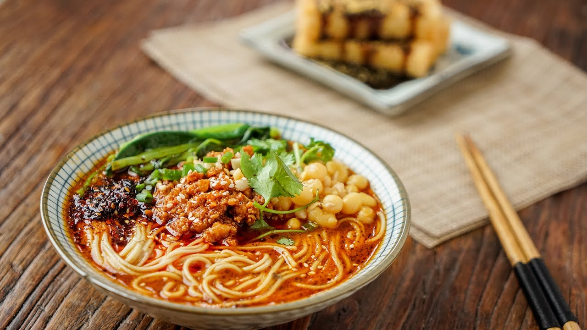

I am from China, my parents are both Chinese. This is the second year of my stydu in Canada, my cooking skill has improved dramatically.
| Time | Monday | Tuesday | Wednesday | Thursday | Friday |
|---|---|---|---|---|---|
| 9am | MATH1014 | MATH1014 | PHYS1410 | MATH1014 | |
| 10am | EECS1012 | PHYS1410 | |||
| 11am | EECS1012 | PHYS1410 | |||
| noon | |||||
| 1pm | PHYS1410 | EECS1012 | |||
| 2pm | EECS1012 | ||||
| 3pm | EECS1012 | ||||
| 4pm | EECS1001 | ||||
| 5pm | PHYS1410 | PHYS1410 | PHYS1410 |
